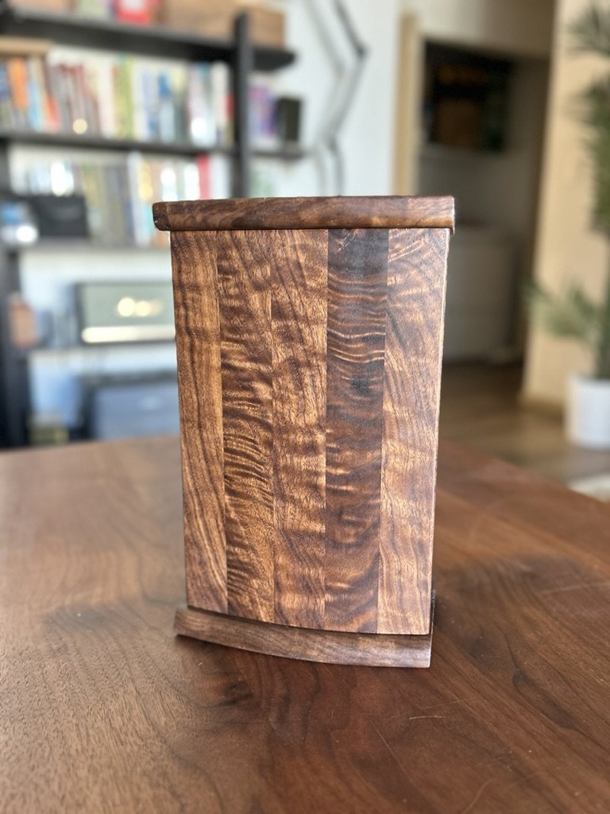

Notes from the workshop / 01
Why choose
custom & handmade?
A custom piece begins with the way you live. A handmade piece is built to stay with you—and, with care, to belong to the people who come after you.

Most furniture is designed around speed: repeatable parts, quick assembly, and a life measured in seasons. A custom, handmade piece begins somewhere else. It starts with a home, a need, a board with its own character, and a question: what could this become if it were given time?
Made for your life.
Customization is not simply choosing a size or finish. It is paying attention to the life around an object: the awkward corner that needs a cabinet, the entryway ritual that needs a place for shoes, the books, records, glasses, or keepsakes that deserve a home. Proportion, storage, material, and details are considered together, so the piece feels inevitable in the room it was made for.
Material has a voice.
Wood is never perfectly uniform, and that is exactly the point. A knot, a ribbon of figure, a quiet shift from heartwood to sapwood—these are not flaws to conceal. They are the record of a living thing. Working by hand leaves room to respond to that record, so the design grows from the material instead of being imposed on it.
Joinery you can trust.
The strength of a piece often lives where you cannot immediately see it. Every joint at GouMang is hand cut, using time-tested Chinese and Japanese woodworking techniques—most often traditional dovetails and carefully fitted mortise-and-tenon joinery. These connections let the wood work as wood wants to work, rather than relying on shortcuts, hidden fasteners, or a flat-pack logic.
This is not anonymous flat-pack furniture. It is an heirloom in the making—built to earn its place through use, repair, and the memories that gather around it.
Built to be passed on.
Choosing solid wood and thoughtful joinery is a practical decision as much as an aesthetic one. A well-made piece can be tightened, refinished, adapted, and passed along. Its surface takes on a patina; its small marks become part of the story. Rather than becoming another disposable object, it becomes a useful witness to the life around it.
Not perfect. Personal.
Handmade work may retain the trace of a tool, a subtle variation in a curve, or a grain pattern no one could repeat. Those details are a reminder that a person made it, for a person. The goal is not factory perfection; it is a piece with presence—useful now, deeply yours, and worth keeping for later.
If you have a space, a need, or even only the beginning of an idea, let’s start a conversation ↗.